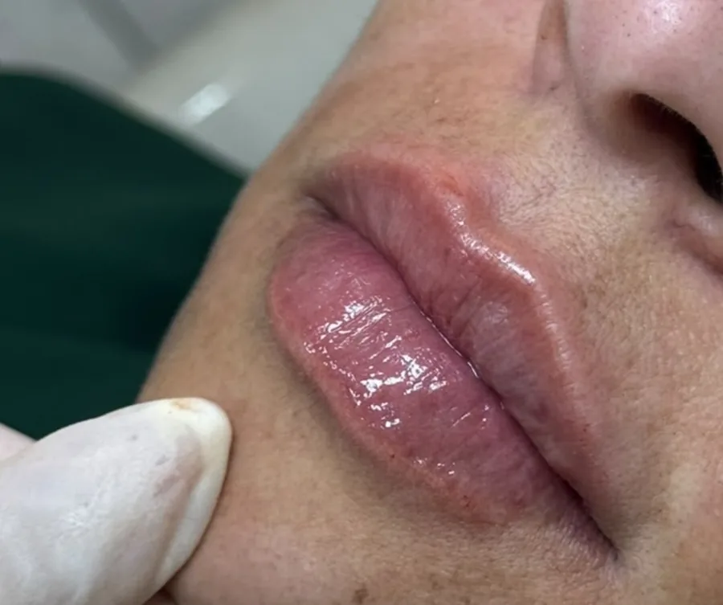

Nº 01Harmonização facial
Naturalidade sempre seráa minha prioridade.Dra. Letícia Arthuso@leticiaarthuso
Preenchimento labialNº 02
Realçar o quejá é seu.

Dra. Letícia Arthuso@leticiaarthusoOuço muitoNº 03
 Botox deixa
Botox deixaa cara parada.Bem planejado, ele suaviza a marca
e mantém a sua expressão.Dra. Letícia Arthuso@leticiaarthuso
O que a sua pele pede?Nº 04
Skinboosterhidrata e devolve o viço
Bioestimuladorestimula o colágeno e a firmeza
ouDra. Letícia Arthuso@leticiaarthusoCarrosselNº 05
tem idade certa para começar?ArrasteDra. Letícia Arthuso@leticiaarthusoRelato de pacienteNº 06
Desde a primeira conversa,me senti super à vontade
para falar exatamente
o que eu queria.Paciente de botoxDra. Letícia Arthuso@leticiaarthuso

O consultórioNº 07
Atendimento com hora marcadaAv. Josué de Queirós, 349 · Matozinhos · São João del ReiDra. Letícia Arthuso@leticiaarthusoToxina botulínicaNº 08
Suave, sem perdera expressão.
 Antes
Antes Depois
Depois
São João del ReiNº 09
Agenda abertaVamos montar o seu plano?Chame no directDra. Letícia Arthuso@leticiaarthuso